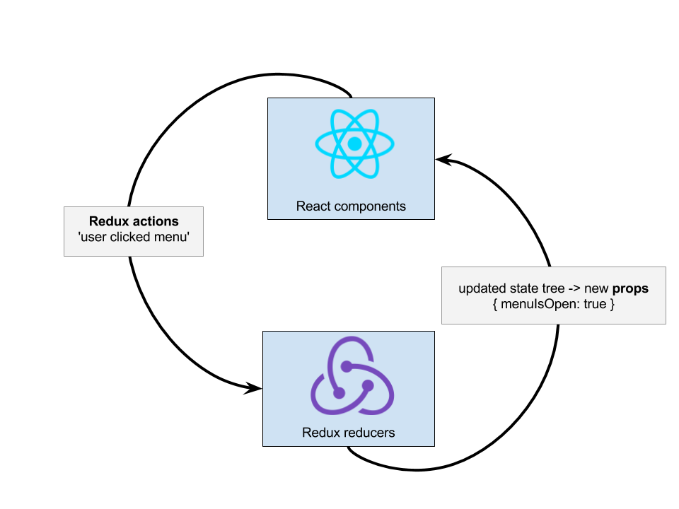

React + Redux
What we will cover
- Benefits of React
- ES6
- JSX
- Props
- State
- Redux - what is it?
- State Tree
- The Redux Cycle
- Action Creators
- Reducers
- Smart "Connected" Views
- "Dumb" Components
- Selectors
Benefits of React
Virtual DOM
- React keeps a 'virtual' copy of the DOM in memory
- When state changes in the application, first the changes are applied to the virtual DOM
- React diffing engine handles re-renders of only the smallest necessary changes to the actual DOM
- Instead of keeping a list of values to 'watch' (the way Angular or Backbone does), React re-renders DOM elements based on this DOM-virtual DOM comparison.
Benefits of React
Templating power of Javascript
- Traditional templating languages (Handlebars, Mustache, Jade, EmbeddedJS, Underscore) contain pared-down logic for things like conditionals ('if'), looping, etc.
- JSX - React's way of combining HTML templates with logic - facilitates native Javascript for template logic, instead of stripping out a subset of logic
Benefits of React
Templating power of Javascript
function render() {
var flavors = ["peanut butter", "chocolate", "vanilla"];
return (
My favorite ice cream flavors are
{flavors.map(name => {name}).join (' and ')}.
);
}
ES6
Template strings
var endpointUrl = `${baseUrl}/company/${companyId}/product/${productName}`;
ES6
Destructuring Syntax
var { name, type, color, age } = pet;
var [ first, second, third ] = list;
ES6
Spread Syntax
For making a copy of an object with some modified properties
var initialInputState = {
hasFocus: false,
isValid: true,
value: "",
};
Click in form field - which properties change?
var newInputState = {
...initialInputState,
hasFocus: true,
};
ES6
Arrow functions
- Takes care of context binding (
function a() {}.bind(this))
var clickHandler = function (e) {
e.preventDefault();
console.log("Button clicked");
}
var clickHandler = (e) => {
e.preventDefault();
console.log("Button clicked");
}
ES6
Array methods - map
var array = ["javascript", "html", "css"];
array.map(function (item, i) {
console.log("On day " + i + " of class we will cover " + item);
})
ES6
let and const
- Use in place of generic "var"
- Use
constif the variable should be a constant - Use
letif the variable can be modified letandconstare block-scoped, not function-scoped
ES6
Modules
// config.js
export var port = 3000
export function getAccounts(url) {
...
}
// server.js
import { port, getAccounts } from 'module'
console.log(port) // 3000
JSX: What is it?
- JSX is a preprocessor step that adds XML syntax to JavaScript.
- You can definitely use React without JSX but JSX makes React a lot more elegant.
JSX
class App extends Component {
render() {
return (

Welcome to React
To get started, edit src/App.js and save to reload.
);
}
}
JSX features
JSX looks a lot like HTML, but uses some of its own syntax & attribute names
classNameinstead ofclass(becauseclassis a reserved keyword in Javascript)- Event names:
onClick, onKeyUp, onChange
Props
Props are the pieces of information passed from one component to its child component
Literal vs. Interpreted Props
If the value of the prop is Javascript, it needs to be wrapped in brackets: {}
text={`Today's date is ${date}.`}onClick={this.clickHandler}onMouseEnter={() => console.log("MOUSE ENTERED"); }
Lifecycle Methods
Each React component can implement these lifecycle components:
constructor(props)componentWillMountrendercomponentDidMountshouldComponentUpdate(nextProps, nextState)componentWillUpdate(nextProps, nextState)componentDidUpdate(prevProps, prevState)componentWillReceiveProps(nextProps)componentWillUnmount
Components
Reusable Components are the building block of React
- These can be small style components, like styled buttons, section headers, form items that will be used throughout your app;
- or app-specific components like the sidebar, header menu, or content-area.
State
Use state when your component needs to keep track of something
With Redux, state is maintained in the state tree, not in components. Only use component state for performance-sensitive UI elements (like sliders)
Setting Up State
Each React component has a constructor function that gets called before it renders - here's where your initial state should be set.
class App extends Component {
constructor(props) {
super();
this.state = {
meetups: []
}
}
}
Accessing state
render() {
const { items, itemCount } = this.state;
return (
{items.map((item, index) => {item})}
);
}
addItem = (e) => {
const { items } = this.state;
items.push(e.value);
this.setState({ items: items });
}
Stateless Functional Components
If a component doesn't need to implement any lifecycle methods, it can be expressed as a simple function of props.
function Welcome(props) {
return Hello, {props.name}
;
}
PropTypes
React's PropTypes specify the expected type of each prop, and warn when propTypes don't match the actual values, which makes debugging easier and acts as documentation.
Meetup.propTypes = {
data: PropTypes.shape({
description: PropTypes.string,
name: PropTypes.string,
rsvp_limit: PropTypes.number,
}),
}
Redux - What is it
Redux is a predictable state container for JavaScript apps.
More highly recommended resources for Redux:
Egghead.io - Dan Abramov, creator of Redux, explains in 2 hrsRedux - What is it
One-way data flow:
- components don't directly modify their state or other components' states:
- they simply tell the 'store' (the thing that manages application state) what change they want to make,
- and the store manages telling the views to update
Redux - What does it look like?
- Single data store describes entire application state (no individual 'models')
- In React files, event handlers describe user interactions
handleSubmitClick = e => {
dispatch(submitButtonClicked());
};
render() {
}
A React/Redux project
└── src
├── App.js - "entry point" - injects the app into your webpage
├── api - requests to APIs for data go here
├── assets - images, fonts, styles
├── components - reusable components, agnostic of role in app,
with their styles
├── state - REDUX! Stores the app's entire state tree,
and updates the state tree in response to events
in the views
├── utils - miscellaneous functions for reuse throughout app
└── views - app-specific UI interfaces
A React/Redux project - details
├── api
│ ├── meetup.js
│ └── spotify.js
├── assets
│ ├── images
│ └── styles
├── state <- THIS IS WHERE REDUX COMES IN!
│ ├── actions
│ └── reducers
├── components
│ ├── event.js
│ ├── event.scss
│ ├── input.js
│ └── input.scss
├── views
├── app-header
└── login
└── utils
The Redux Cycle
The Redux Cycle
- React components dispatch 'actions' describing the user interaction
- Redux store listens for actions and returns an updated copy of the State Tree, based on data from actions
- React components listen for updates to their props and rerender if anything changes
Anatomy of a Redux Action
- A Redux action is a Javascript object
- It has one absolutely essential property: a type which is a descriptive string.
- It has optional properties - the most important one is data
someActions = [
{
type: "SPOTIFY_PLAYLIST_DATA_RECEIVED",
data: {
playlistName: "Snow Day Playlist",
genre: "RockNRoll",
}
},
{
type: "USER_LOGOUT_SUCCEEDED",
}
]
Action Creators
- We need to dispatch different actions from different parts of the UI.
- To access our actions, create functions that return those actions, which can be called from the UI
- They allow us to pass different information to the actions as function arguments so that the actions are reusable.
- These functions are called action creators.
export function spotifyPlaylistDataReceived(playlist) {
return {
type: "SPOTIFY_PLAYLIST_DATA_RECEIVED",
data: {
playlistName: playlist.name,
genre: playlist.genre,
}
};
}
Redux cycle: Actions
React:views/login-form.js
handleLogoutClick = () => {
const { userLoggedOut } = this.props;
dispatch(userLoggedOut());
}
state/actions/login-action-creators.js
// Meanwhile, in userActions.js
userLoggedOut = () => {
return {
type: "USER_LOGGED_OUT",
}
};
Redux cycle: Actions
React:views/todo-list.js
handleDeleteItem = () => {
const { itemDeleted, itemId } = this.props;
dispatch(itemDeleted(itemId));
}
state/actions/todo-list-action-creators.js
// Meanwhile, in itemActions.js
itemLoggedOut = (itemId) => {
return {
type: "ITEM_DELETED",
data: { id: itemId },
};
};
But what happens to those actions?
Reducers!
State tree
The state tree describes the state of the application
- This includes visual elements as well as data
Reducers: oldState + action = newState
Reducers
Reducers are functions that take state and an action and return a new state
function usersReducer(state = {}, action) {
switch (action.type) {
case 'LOGGED_IN':
return {
...state,
loggedIn: true
};
case 'LOGGED_OUT':
return {
...state,
loggedIn: false
};
default:
return state;
}
}
State Slices
- Each "slice" of state gets its own reducer, so your reducer functions don't have to navigate complex nested objects.
- Each slice has an
initialStatethat defines the structure for the state and what its initial values are. - Slices are discrete logical sections of your state - user, search, todos. You can break them up the way you want.
- Redux's combine-reducer function combines all the reducers into the "state tree".
Unpacking Reducers
- Reducers must be pure functions with no side effects
- The reducer function is what defines how the new state should look, but we can't actually modify the old state
- A reducer takes the old state object, and based on the action, returns a new state object
- Spread syntax makes a copy of the old state, and modifies that with the new properties
ES6 Spread Syntax again!
function lightSwitchReducer(oldState = {}, action) {
switch (action.type) {
case 'SWITCH_TOGGLED':
return {
...state,
lightIsOn: !state.lightIsOn,
};
}
}
Why can't we just do this?
function lightSwitchReducer(oldState = {}, action) {
switch (action.type) {
case 'SWITCH_TOGGLED':
state.lightIsOn = !state.lightIsOn;
return state;
}
}
Because we need pure functions: we can't modify state
Redux-thunk: Actions with Side Effects
Side effects can be handled by Redux Action Creators
- API Calls
- Dispatch other actions
Redux-thunk: Actions with Side Effects
- Middleware
- Redux-thunk action creators can return a normal action OR a function
- The 'inner function' gets 2 parameters: the
dispatchfunction and agetStatefunction - That
getStateparameter is great because you can grab any part of the state tree!
Redux-thunk: Actions with Side effects
handleFetchPhotosForUser = () => {
const { photosFetchedForUser, username } = this.props;
photosFetchedForUser(username);
}
// Meanwhile, in actions/photos.js
photosFetchedForUser = (username) => {
return (dispatch, getState) => {
dispatch({
type: 'PHOTOS_REQUESTED_FOR_USER',
data: { username: username },
});
fetch(`/photos/${username}`).then(photos => {
dispatch({
type: 'PHOTO_REQUESTED_SUCCEEDED_FOR_USER',
data: { photos: photos, username: username },
});
}).catch(err => {
dispatch({
type: 'PHOTO_REQUEST_FAILED_FOR_USER',
data: { error: err, username: username }
});
});
};
};
Redux-thunk: Actions with Side Effects
What if username isn't used in your view anywhere? No need to pass it through as a prop - use getState!
handleFetchPhotosForUser = () => {
const { photosFetchedForUser } = this.props;
photosFetchedForUser();
}
// Meanwhile, in actions/photos.js
photosFetchedForUser = () => {
return (dispatch, getState) => {
const state = getState();
const username = state.user.username;
dispatch({
type: 'PHOTOS_REQUESTED_FOR_USER',
data: { username: username },
});
fetch(`/photos/${username}`).then(photos => {
dispatch({
type: 'PHOTO_REQUESTED_SUCCEEDED_FOR_USER',
data: { photos: photos, username: username },
});
})
};
};
Redux-Saga: Another approach to Actions with Side Effects
Redux Saga uses ES6 generator functions to manage side effects
- Stateful process manager, so 'status' of requests doesn't need to be managed by Redux store
- Testing: Encapsulates side effects in objects that can be tested for equality like Redux actions, instead of mocking modules like in Redux Thunk.
Connected "Smart" Components
- Different parts of the app need different action creators as well as different parts of state
- Smart components are the React components that connect Redux action creators and state to your UI
- They are containers for styled, visible React components. They act as connectors between state and UI by passing action creators to their children.


Dumb components
- Dumb components are the visible components to your UI
- They get all of their props and functions from their smart parent components
- They have no reference to Redux or the state tree
Dumb components

Connecting a Smart Component to State
React-redux provides a function called 'connect'
ConnectedComponent = connect(mapStateToProps)(Component)mapStateToPropsis a function that you write for each smart component- It translates the state tree into props to pass to its children
mapStateToProps = (state) => {
isMenuOpen: state.menu.isOpen,
menuOptionSelected: state.menu.optionSelected,
menuOptions: state.menu.options,
formattedOptions: customFormattingFunction(state.menu.options),
};
Connecting a Smart Component to Action Creators
- React-redux provides
bindActionCreators - Combines action creators with the
dispatchfunction var boundActions = bindActionCreators(actionCreators, dispatch)- The bound actions can be passed to "dumb" components as props
// App.js
import { Component } from 'react'
import { bindActionCreators } from 'redux'
import { connect } from 'react-redux'
import * as groceryActionCreators from '../state/actions/grocery-action-creators.js';
class GroceryListContainer extends Component {
render() {
// Injected by react-redux:
let { dispatch } = this.props
let boundActionCreators = bindActionCreators(groceryActionCreators, dispatch)
return (
class GroceryList extends Component {
handleItemClicked = () => {
const { item, removedGroceryItem } = this.props;
removedGroceryItem(item);
};
render() {
const { item } = this.props;
return (
{item.name}
)
}
}
Selectors
Selector functions are like saved queries you can use to derive a specific piece of information from the state tree
Using the 'reselect' library gives us some advantages:
- Perform calculations/derivations from your raw data, so the state tree doesn't need to store them.
- Memoized by reference
- Can take other selector functions as arguments
Selectors
import { createSelector } from 'reselect'
const shopItemsSelector = state => state.shop.items
const taxPercentSelector = state => state.shop.taxPercent
const subtotalSelector = createSelector(
shopItemsSelector,
items => items.reduce((acc, item) => acc + item.value, 0)
)
const taxSelector = createSelector(
subtotalSelector,
taxPercentSelector,
(subtotal, taxPercent) => subtotal * (taxPercent / 100)
)
export const totalSelector = createSelector(
subtotalSelector,
taxSelector,
(subtotal, tax) => ({ total: subtotal + tax })
)
let exampleState = {
shop: {
taxPercent: 8,
items: [
{ name: 'apple', value: 1.20 },
{ name: 'orange', value: 0.95 },
]
}
}
console.log(subtotalSelector(exampleState)) // 2.15
console.log(taxSelector(exampleState)) // 0.172
console.log(totalSelector(exampleState)) // { total: 2.322 }